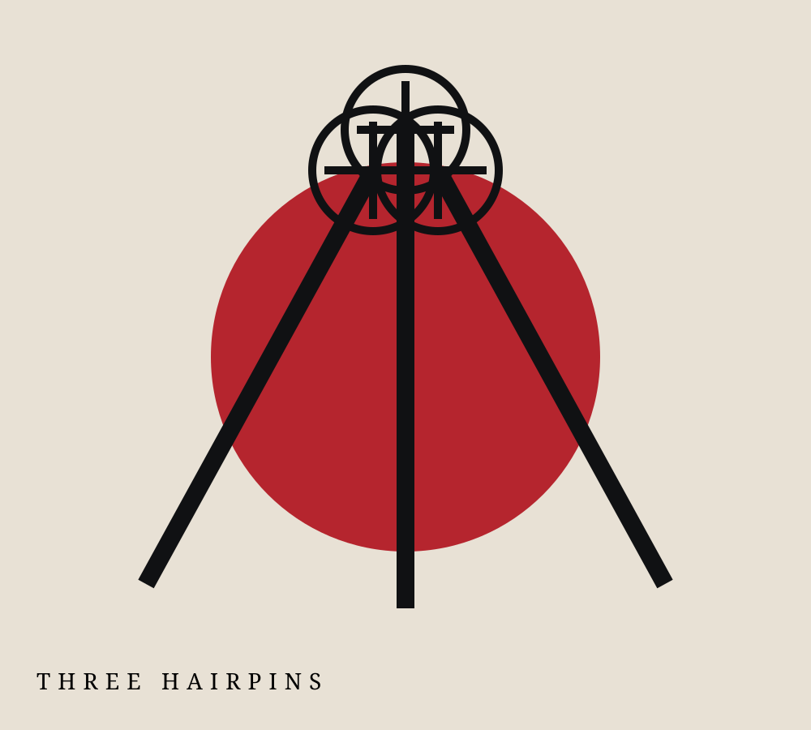
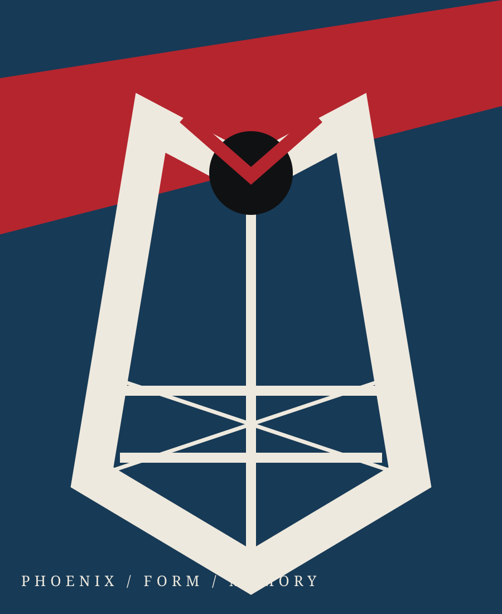
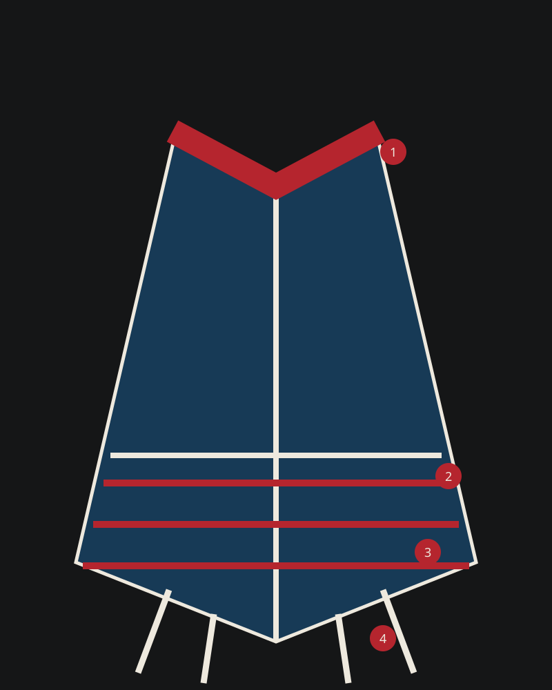
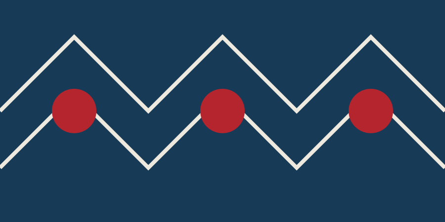
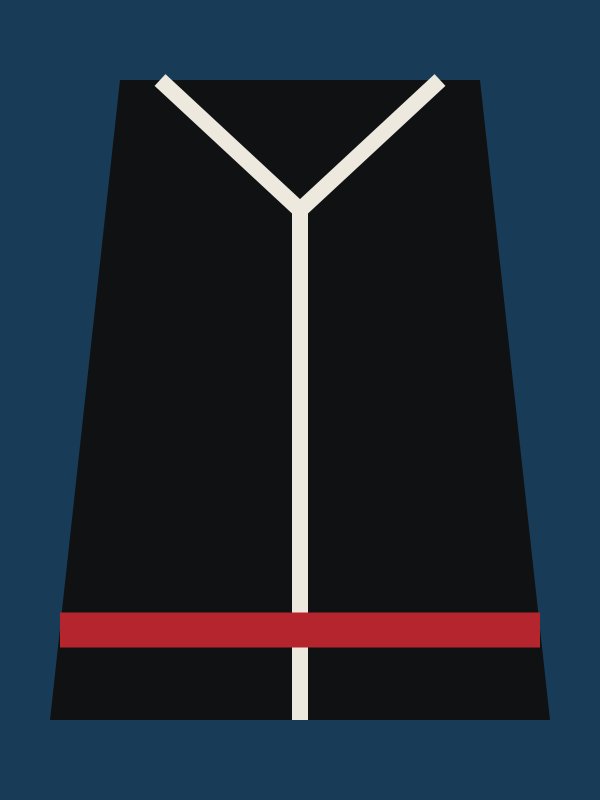
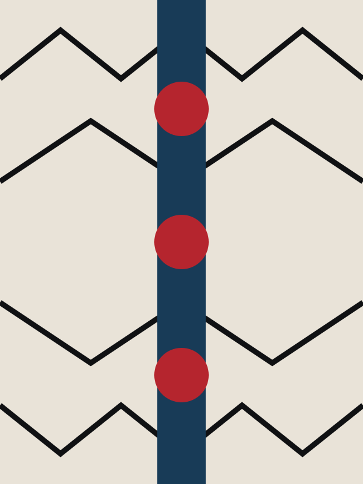

A.03
Three Hairpins
Known as the “three hairpins,” the headdress gathers hair, metal and memory into a sculptural crown.
Digital Curation · Archive 001
A living archive of dress, memory and female identity from the mountains of southeast China.
Enter
Clothing as a portable archive
01—
“The body is absent. What remains is a language of cloth, silver, line and memory.”
This exhibition looks beyond portraiture. Garments and objects take the foreground, revealing how She women carry ancestry through material culture.
Garment anatomy / 服饰结构
The Phoenix Dress is not a single fixed costume but a regional system of symbols, silhouettes and craft knowledge.

A dark field frames the face and holds embroidered borders close to the body.
Geometric and botanical motifs transform seams into lines of inheritance.
Layered panels give the silhouette rhythm, weight and ceremonial presence.
Rear ribbons extend the garment into movement, recalling the mythic bird.
Adornment / 饰物
Adornment marks age, community and occasion. Each object is both intimate and public: worn close to the body, read by the collective.

A.03
Known as the “three hairpins,” the headdress gathers hair, metal and memory into a sculptural crown.
A.07
Light becomes material. Pendants sound with movement and turn the wearer into a luminous presence.
A.11
Stitches preserve knowledge outside the written page—learned through hands, repetition and time.

03—
Dress is not a static relic. It is remade each time a woman chooses how—and whether—to wear it.
Across generations, She women negotiate continuity and change. Festival dress, family photographs, everyday clothing and online self-representation all belong to the same evolving archive.
This project centers women as makers, keepers and interpreters of culture—not simply as subjects on display.
Open collection / 数字档案
A growing index of garments, adornments, techniques and oral histories. Replace any image and rewrite every record to develop your own collection.

OBJ—001
OBJ—002

OBJ—003